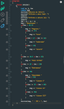

A Linguagem Portugol serve para você aprender a lógica de programação, abaixo segue exemplo de um código:
cadeia nome
escreva("Digite uma frase")
leia(nome)
escreva(nome)
Abaixo teremos a logo da linguagem:
A linguagem Portugol é baseada na Linguagem C, uma das linguagens mães de programação. Porém o Portugol não é considerado uma linguagem de programação em específico, pois ela é focado no aprendizado da lógica.
